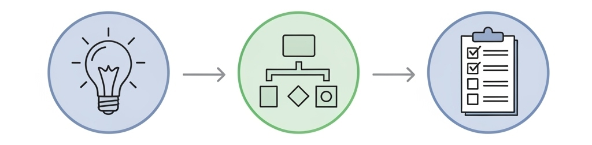
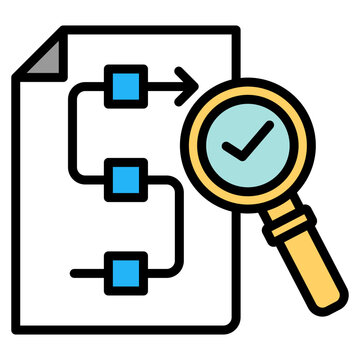
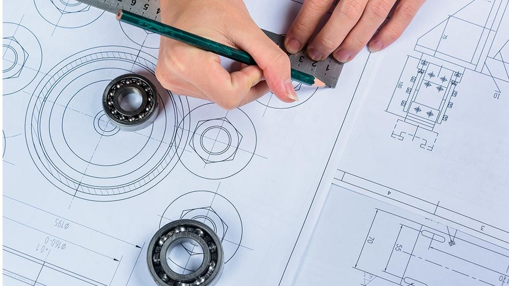
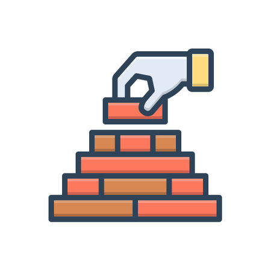
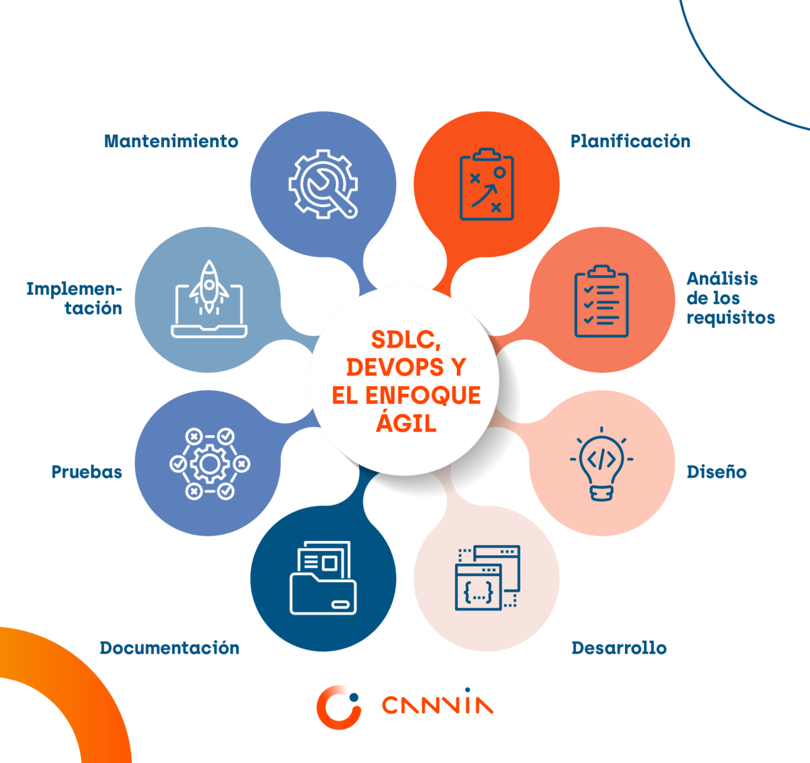

ISEMED
Área de Informática
Área de Informática
Análisis y Diseño de Sistemas I.
Undécimo Grado (II BTP) Sección "A"
Docente: Pablo Antonio Peña.
06 de Julio de 2025.
Comprender los conceptos fundamentales del tema.
Aplicar los conocimientos en casos prácticos.
Comprender el proceso de desarrollo de soluciones informáticas complejas.

Proceso de investigar un problema o necesidad de negocio para determinar qué debe hacer un nuevo sistema.

Proceso de especificar cómo se construirá un nuevo sistema para satisfacer los requisitos.

Establecen los cimientos del proyecto de software.

Marco de trabajo que define las etapas de un proyecto de software.

Profesional que actúa como el puente esencial entre usuarios y desarrolladores.
Seguridad y consideraciones éticas.
Información en desarrollo
Perspectivas futuras y tendencias tecnológicas.
Información en desarrollo
Pregunta interactiva 1 vinculada a QuizPro.
Pregunta interactiva 2 vinculada a QuizPro.
Pregunta interactiva 3 vinculada a QuizPro.
Pregunta interactiva 4 vinculada a QuizPro.
Pregunta interactiva 5 vinculada a QuizPro.
Responde estas preguntas en el módulo de actividades
Pregunta interactiva 1 vinculada a QuizPro.
Pregunta interactiva 2 vinculada a QuizPro.
Pregunta interactiva 3 vinculada a QuizPro.
Pregunta interactiva 4 vinculada a QuizPro.
Pregunta interactiva 5 vinculada a QuizPro.
Responde estas preguntas en el módulo de actividades
Puntos clave para el estudio:
• Conceptos base dominados.
• Metodologías identificadas.
• Aplicaciones prácticas comprendidas.
Realiza un mapa conceptual sobre el tema visto hoy. Valor: 5%. Fecha: Próxima clase.
Concepto A
Definición clave para el examen parcial.
Concepto B
Término técnico fundamental del área.
¡Gracias por tu atención! Sistema ISEMED - Área de Informática.